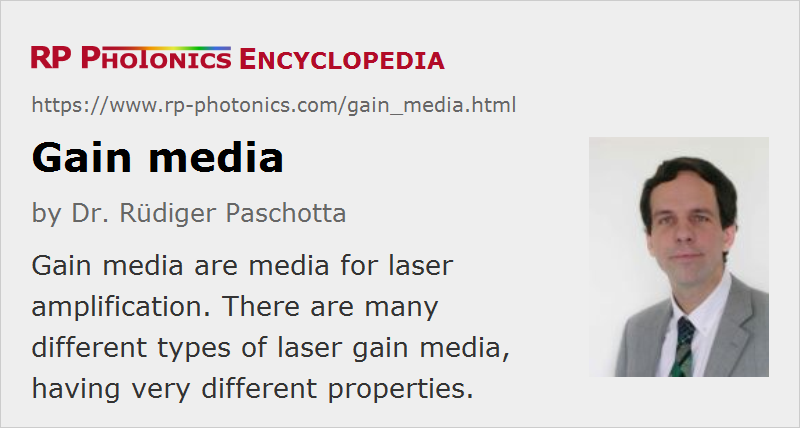

Gain Media
Definition: media for laser amplification
More specific terms: ceramic gain media, rare-earth-doped gain media, transition-metal-doped gain media, chromium-doped gain media, erbium-doped gain media, neodymium-doped gain media, praseodymium-doped gain media, thulium-doped gain media, ytterbium-doped gain media, four-level and three-level gain media, laser crystals, rare-earth-doped fibers
German: Verstärkungsmedien
Categories: optical materials, lasers, optical amplifiers
How to cite the article; suggest additional literature
Author: Dr. Rüdiger Paschotta
Within the context of laser physics, a laser gain medium is a medium which can amplify the power of light (typically in the form of a light beam). Such a gain medium is required in a laser to compensate for the resonator losses, and is also called an active laser medium. It can also be used for application in an optical amplifier. The term gain refers to the amount of amplification.
As the gain medium adds energy to the amplified light, it must itself receive some energy through a process called pumping, which may typically involve electrical currents (electrical pumping) or some light inputs (→ optical pumping), typically at a wavelength which is shorter than the signal wavelength.
Types of Laser Gain Media
There are a variety of very different gain media; the most common of them are:
- Certain direct band gap semiconductors such as gallium arsenide, indium gallium arsenide or gallium nitride are typically pumped with electrical currents, often in the form of quantum wells (→ semiconductor lasers).
- Certain laser crystals and glasses such as Nd:YAG (neodymium-doped yttrium aluminum garnet → YAG lasers), Yb:YAG (ytterbium-doped YAG), Yb:glass, Er:YAG (erbium-doped YAG), or Ti:sapphire are used in the form of solid pieces (→ bulk lasers) or optical glass fibers (→ fiber lasers, fiber amplifiers). These crystals or glasses are doped with some laser-active ions (in most cases trivalent rare earth ions, sometimes transition metal ions) and optically pumped. Lasers based on such media are sometimes called doped insulator lasers.
- There are ceramic gain media, which are also normally doped with rare earth ions.
- Laser dyes are used in dye lasers, typically in the form of liquid solutions.
- Gas lasers are based on certain gases or gas mixtures, typically pumped with electrical discharges (e.g. in CO2 lasers and excimer lasers).
- More exotic gain media are chemical gain media (converting chemical energy to optical energy), nuclear pumped media, and undulators in free electron lasers (transferring energy from a fast electron beam to a light beam).
Compared with most crystalline materials, ion-doped glasses usually exhibit much broader amplification bandwidths, allowing for large wavelength tuning ranges and the generation of ultrashort pulses. Drawbacks are inferior thermal properties (limiting the achievable output powers) and lower laser cross sections, leading to a higher threshold pump power and (for passively mode-locked lasers) to a stronger tendency for Q-switching instabilities. See the article on laser crystals versus glasses for more details.
The doping concentration of crystals, ceramics and glasses often has to be carefully optimized. A high doping density may be desirable for good pump absorption in a short length, but may lead to energy losses related to quenching processes, e.g. caused by upconversion via clustering of laser-active ions and energy transport to defects.
Important Physical Effects
In most cases, the physical origin of the amplification process is stimulated emission, where photons of the incoming beam trigger the emission of additional photons in a process where e.g. initially excited laser ions enter a state with lower energy. Here, there is a distinction between four-level and three-level gain media.
A less frequently used amplification process is stimulated Raman scattering, involving the conversion of some higher-energy pump photons into lower-energy laser photons and phonons (related to vibrations e.g. of the crystal lattice).
For high levels of input light powers, the gain of a gain medium saturates, i.e., is reduced. This naturally follows from the fact that for a finite pump power an amplifier cannot add arbitrary amounts of power to an input beam. In laser amplifiers, saturation is related to a decrease in population in the upper laser level, caused by stimulated emission.
Thermal effects can occur in gain media, because part of the pump power is converted into heat. The resulting temperature gradients and also subsequent mechanical stress can cause lensing effects, distorting the amplified beam. Such effects can spoil the beam quality of a laser, reduce its efficiency, and sometimes even destroy the gain medium (thermal fracture).
Relevant Physical Properties of Laser Gain Media
A great variety of physical properties of a gain medium can be relevant for use in a laser. The desirable properties include:
- a laser transition in the desired wavelength region, preferably with the maximum gain occurring in this region
- a high transparency of the host medium in this wavelength region
- a pump wavelength for which a good pump source is available (in case of an optically pumped laser); efficient pump absorption
- a suitable upper-state lifetime: long enough for Q-switching applications, short enough if fast modulation of the power is required
- a high quantum efficiency, obtained via a low prevalence for quenching effects, excited-state absorption and the like, but also possibly by strong enough beneficial effects such as certain multi-phonon transitions or energy transfers
- ideally, four-level behavior, because quasi-three-level behavior introduces various additional constraints
- robustness and a long lifetime, chemical stability
- for solid-state gain media: a host medium which is available with good optical quality in the required size, can be cut and polished with good quality (appropriate hardness), allows for high doping with laser-active ions without clustering, is chemically stable (e.g., not hygroscopic), and has a good thermal conductivity and low thermo-optic coefficients (for weak thermal lensing in high-power operation) and high resistance to mechanical stress; optical isotropy can be desirable, but in other cases birefringence (reducing thermal depolarization) and possibly polarization-dependent gain is preferable (see also: polarization of light)
- for high gain, low threshold pump power: a high product of emission cross section and upper-state lifetime (σ−τ product)
- for low beam quality requirements on the pump source: high pump absorption may be helpful
- for wavelength tuning: a large gain bandwidth
- for ultrashort pulse generation: a broad and smoothly shaped gain spectrum; suitable chromatic dispersion and nonlinearity are also sometimes important
- for passive mode locking without Q-switching instabilities: high enough laser cross sections
- for high energy pulse amplification (e.g. in regenerative amplifiers): a high optical damage threshold and not too high saturation fluence of the gain
Note that in many situations there are partially conflicting requirements. For example, a very low quantum defect is not compatible with four-level behavior. A large gain bandwidth typically means that laser cross sections are smaller than ideal, and that the quantum defect cannot be very small. Disorder in solid-state gain media increases the gain bandwidth, but also reduces the thermal conductivity. A short pump absorption length can be advantageous, but also tends to exacerbate thermal effects.
It is apparent that different situations lead to very different requirements on gain media. For this reason, a very broad range of gain media will continue to remain important for applications, and making the right choice is essential for constructing lasers with optimum performance.
Suppliers
The RP Photonics Buyer's Guide contains 54 suppliers for laser gain media.
Questions and Comments from Users
Here you can submit questions and comments. As far as they get accepted by the author, they will appear above this paragraph together with the author’s answer. The author will decide on acceptance based on certain criteria. Essentially, the issue must be of sufficiently broad interest.
Please do not enter personal data here; we would otherwise delete it soon. (See also our privacy declaration.) If you wish to receive personal feedback or consultancy from the author, please contact him e.g. via e-mail.
By submitting the information, you give your consent to the potential publication of your inputs on our website according to our rules. (If you later retract your consent, we will delete those inputs.) As your inputs are first reviewed by the author, they may be published with some delay.
See also: gain, gain bandwidth, gain saturation, laser transitions, quantum defect, laser crystals, rare-earth-doped gain media, transition-metal-doped gain media, ceramic gain media, laser crystals versus glasses, solid-state lasers, four-level and three-level gain media, optical amplifiers, doping concentration
and other articles in the categories optical materials, lasers, optical amplifiers
|  |
If you like this page, please share the link with your friends and colleagues, e.g. via social media:
These sharing buttons are implemented in a privacy-friendly way!